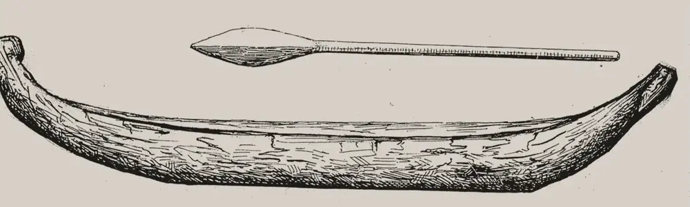

· Edición 23 · 5 min de lectura
Consulta previa: nadie sabe cuántas hay abiertas, y el Gobierno quiere destrabarlas en 90 días

Dibujo de la misión de Joseph de Brettes, reproducido por Molteni, 1892 · Dominio público, Biblioteca Nacional de Francia, vía Wikimedia Commons
Consulta previa: nadie sabe cuántas hay abiertas, y el Gobierno quiere destrabarlas en 90 días
En pocas palabras. Antes de una carretera, una mina o una línea de energía en territorio de comunidades étnicas, el Estado debe consultarlas. Es un derecho. Pero miles de consultas siguen abiertas por años, y el Gobierno ni siquiera sabe cuántas hay. Ahora promete destrabarlas sin pasar por encima del derecho.
Qué pasó. Imagine una notaría donde los expedientes se apilan en el piso, sin número ni responsable. Nadie dice que no; los trámites simplemente no terminan.
El 5 y 6 de octubre, el ministro del Interior, Rodrigo Lara, anunció un plan para la consulta previa: el diálogo obligatorio con pueblos indígenas, comunidades negras, raizales, palenqueras y el pueblo Rom antes de decidir algo que los afecte directamente. Las cifras del debate, según El Colombiano:
- Desde 2011 se han hecho más de 13.000 consultas; unas 1.350 en 2026.
- En los últimos cuatro años, solo 16 de cada 100 llegaron a firmar acuerdos. Unas 77 de cada 100 siguen abiertas.
- De las abiertas, 31 de cada 100 llevan más de cuatro años sin decisión.
- Según el ministro, hoy nadie sabe con certeza cuántas consultas están en curso: la oficina no tiene un sistema que las cuente.
El plan: en 30 días, digitalizar todos los expedientes y hacer un inventario por sector, etapa y antigüedad; en 60, tableros de control con un responsable y una fecha para cada caso; en 90, una reducción "sustancial" del represamiento. Además, una directiva presidencial y un proyecto de ley. El punto más discutido: quitar o limitar el "test de proporcionalidad", el paso que se usa cuando la comunidad y el Estado no llegan a un acuerdo. El ministro ha dicho "eliminarlo" y también "limitarlo".
Un ejemplo de lo que cuesta la espera: Colectora, la línea de 475 kilómetros que llevaría la energía de los parques eólicos de La Guajira, pasó de 235 consultas previstas a más de 250. Iba a operar en agosto de 2026; ahora apunta a abril de 2027.
Cómo llegamos aquí.
- Un derecho sin ley propia. Colombia firmó en 1991 el Convenio 169 de la OIT, que obliga a consultar. (Conocimiento general.) Pero el Congreso nunca expidió la ley estatutaria, la ley especial que exige la Constitución para regular un derecho fundamental. En 2018, la Corte Constitucional, en la sentencia SU-123, les pidió al Gobierno y al Congreso regular la materia y crear una entidad independiente.
- Lo que no se cuenta, no se cierra. Sin inventario, ningún funcionario responde por un expediente viejo.
- Cada quien paga una parte. La empresa paga la demora, la comunidad espera sin respuesta y el usuario, la energía que no llega. Nadie carga el costo completo.
Ya pasó antes. Los gobiernos han intentado ordenar la consulta por directivas, que son instrucciones del presidente a sus entidades: en 2010, 2013 y 2020. En agosto de 2023, el Consejo de Estado anuló partes de la de 2013, por una demanda del pueblo kankuamo. Dijo que una directiva no puede regular un derecho fundamental, que eso exige ley estatutaria, y que el presidente no consultó a los pueblos antes de expedirla. En 2021, organizaciones indígenas rechazaron otro proyecto de ley para reglamentarla.
¿Hay salida? Perú tiene una ley de consulta desde 2011. Su reglamento fija un plazo máximo de 120 días desde que se entrega la propuesta hasta que se firma el acta. Según la prensa minera peruana, allá los procesos toman entre cuatro y seis meses; en Colombia, algunos llegan a diez años.
Pero ojo. Rápido no es lo mismo que bien hecho. Un estudio de 2016, de Riccarda Flemmer y Almut Schilling-Vacaflor, revisó las primeras consultas en el petróleo y el gas de Bolivia y Perú: la participación real fue limitada, por la diferencia de poder y porque las comunidades no sentían el proceso como propio. Y en Colombia, un estudio de 2020 de Maiah Jaskoski, sobre cinco conflictos mineros y petroleros, encontró que las comunidades movilizadas no usaron las reuniones: se negaron a ser consultadas o reclamaron por quedar por fuera. Cerrar el expediente no cierra el conflicto; puede mandarlo a los juzgados.
Dos lecturas
Destrabar es proteger el derecho. Una consulta de cuatro años no le sirve a nadie: ni a la comunidad, que no recibe respuesta, ni al país, que espera la carretera o la energía. Contar expedientes y poner responsables y fechas es lo mínimo. Un trámite que no termina también decide.
Acelerar sin consultar repite el error. Si el cambio llega por directiva, sin ley estatutaria y sin consultar a los pueblos, puede caer en los tribunales como en 2023. Y sin el paso para cuando no hay acuerdo, la última palabra queda en la autoridad que también quiere el proyecto.
Quién decide y cuándo
Quién decide. El Ministerio del Interior, con la Dirección de la Autoridad Nacional de Consulta Previa, ejecuta el plan y prepara la directiva. El Congreso tendría que aprobar el proyecto de ley.
Cuándo. El inventario debería estar en 30 días y la meta de reducción en 90, es decir, a comienzos de enero. No encontramos fecha para la directiva ni para el proyecto de ley.
Cómo participar. Los pueblos indígenas tienen la Mesa Permanente de Concertación con el Gobierno. (Conocimiento general.) Cualquier persona puede seguir el proyecto cuando se radique en el Congreso.
Seguimiento de la decisión
Pendiente · plazo:
Ministerio del Interior (Dirección de la Autoridad Nacional de Consulta Previa); para la ley, el Congreso: Digitalizar e inventariar las consultas previas represadas, expedir la directiva presidencial anunciada y radicar el proyecto de ley que cambiaría el procedimiento, incluido el test de proporcionalidad.
El ministro Rodrigo Lara anunció el plan el 5 y 6 de octubre: inventario en 30 días, tableros de control en 60 y una reducción sustancial del represamiento en 90. El plazo es nuestra cuenta de 90 días; no encontramos fecha para la directiva ni para el proyecto de ley.
La paradoja del día
El Gobierno quiere ordenar la consulta previa con una directiva. En 2023, el Consejo de Estado anuló parte de una directiva sobre consulta previa, entre otras cosas, porque no la consultaron.
Para conversar
La pregunta. ¿Cuánto tiempo es razonable para una consulta: lo que necesite la comunidad para decidir o lo que aguante el proyecto para no caerse?
Para leer más
Etnicidad.gov: los recursos naturales, los pueblos indígenas y el derecho a la consulta previa en los campos sociales minados, de César Rodríguez Garavito (Dejusticia, 2012). Un ensayo corto que explica cómo la consulta se volvió el lugar donde chocan empresas, Estado y comunidades, y por qué el procedimiento a veces reemplaza la discusión de fondo. Se descarga gratis en la página de Dejusticia y en Dialnet.
¿Le interesa ver las fuentes?
14 fuentes: 2 académicas, 3 oficiales, 1 de una organización, 8 de prensa.
- Prensa Semana. MinInterior anuncia reforma para destrabar consulta previa con comunidades: digitalizarán 100 % de los expedientes represados
- Prensa El Heraldo. Gobierno busca destrabar consultas previas con comunidades étnicas: digitalizarán expedientes represados
- Prensa Cambio. El cambio que propone el Gobierno para la consulta previa
- Prensa El Colombiano. Más de 13.000 consultas previas en 15 años: así está el debate para reformar este trámite en Colombia
- Prensa Infobae. Cambio Radical anunció respaldo pleno al plan del Gobierno nacional sobre la consulta previa: en qué consiste
- Prensa Portafolio. Colectora se vuelve a retrasar: 18 nuevas comunidades aplazan la línea clave para la energía eólica de Colombia
- Oficial Corte Constitucional. Sentencia SU-123 de 2018
- Oficial Consejo de Estado, Sección Primera (normograma de la Cancillería). Sentencia del 10 de agosto de 2023, expediente 11001-03-24-000-2016-00164-00, sobre las directivas presidenciales 01 de 2010 y 10 de 2013
- Organización Brigard Urrutia. Consejo de Estado anula Directivas sobre consulta previa
- Prensa Infobae. Militantes indígenas rechazan proyecto de ley que reglamenta la consulta previa (2021)
- Oficial Ministerio de Cultura del Perú. Compendio normativo sobre consulta previa (Ley 29785 y su reglamento)
- Prensa ProActivo (Perú). Procesos de consulta previa en Perú son más cortos
- Académica Third World Quarterly (Flemmer y Schilling-Vacaflor, 2016). Unfulfilled promises of the consultation approach: the limits to effective indigenous participation in Bolivia's and Peru's extractive industries
- Académica Comparative Politics (Jaskoski, 2020). Participatory Institutions as a Focal Point for Mobilizing: Prior Consultation and Indigenous Conflict in Colombia's Extractive Industries
Glosario
- Consulta previa: diálogo obligatorio entre el Estado y una comunidad étnica antes de decidir una obra o medida que la afecte directamente.
- Convenio 169 de la OIT: tratado internacional sobre los derechos de los pueblos indígenas y tribales; obliga a consultarlos.
- Ley estatutaria: ley especial, con trámite más exigente, que la Constitución pide para regular derechos fundamentales.
- Directiva presidencial: instrucción del presidente a las entidades del Gobierno; no es una ley.
- Test de proporcionalidad: paso para decidir qué hacer cuando la comunidad y el Estado no llegan a un acuerdo, pesando el proyecto frente a la afectación.
- Protocolización: firma formal de los acuerdos de una consulta.
- Colectora: línea de transmisión de energía de 500 kilovoltios que conectaría los parques eólicos de La Guajira con el resto del país.
Nota metodológica
Esta es la segunda edición del día. El puntaje y los descartes del día están en la edición 22. Este tema sumó 17 de 21: alcance 2, gravedad 2, duración 3, cercanía 3 y decisión 2. Pasa las cuatro condiciones de nudo: persiste (31 de cada 100 consultas abiertas llevan más de cuatro años, y las directivas se han ensayado desde 2010), tiene un mecanismo (un derecho sin ley estatutaria, sin inventario ni responsable por expediente, y costos repartidos que nadie carga completos), alguien lo puede cambiar (Ministerio del Interior y Congreso) y el daño es medible (procesos sin decisión durante años y proyectos como Colectora aplazados).
Hicimos unas 20 búsquedas en español e inglés para este tema. No pudimos abrir ningún documento completo; trabajamos con resúmenes y resultados de búsqueda. De 14 fuentes, 6 no son de prensa.
Quedó sin verificar o con límites:
- Las cifras de 13.000 consultas, 16, 77 y 31 de cada 100 las conocemos por El Colombiano; no sabemos si salen del Ministerio o de otra fuente. (Fuente única; no verificado.) Las barras no suman 100: el resto son procesos cerrados de otra forma o sin dato.
- No encontramos todavía una respuesta pública de las organizaciones indígenas y afrocolombianas al plan de octubre.
- El caso de Colectora viene de la prensa económica, con datos de la empresa y del Ministerio del Interior.
- La comparación de tiempos con Perú viene de un medio del sector minero peruano. (Fuente única; no verificado.) El plazo de 120 días es del reglamento peruano y no cuenta la etapa preparatoria.
- Los estudios de Flemmer y Schilling-Vacaflor y de Jaskoski son estudios de casos; los conocemos por sus resúmenes.
- La sentencia del Consejo de Estado de 2023 la conocemos por su ficha en el normograma y por resúmenes de firmas de abogados.
El grabado es un dibujo de la misión del explorador francés Joseph de Brettes por La Guajira (1892), reproducido en placa de vidrio para sus conferencias y guardado en la Biblioteca Nacional de Francia. Muestra una canoa y un remo wayuu; es de otra época y lo usamos para evocar el territorio y sus pueblos, sin presentarlo como imagen de hoy. Le recortamos el marco de la placa.
El libro no está en Santo & Seña. Lo elegimos por el tema y confirmamos autor, año y editorial en su ficha en Dialnet y en la página de Dejusticia.